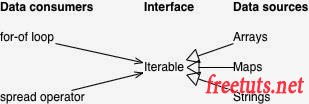

Iterator protocol

Trong tấm hình mô phỏng ba tầng cấp như sau:
Data consumers: Các phương thức - hành động của Iterator, đây cũng chính là Iterator Protocol.
Interface: Interface là một lớp trung gian kế thừa tất cả các Data consummers, đây chính là Iterable. Và vì trong Javascript không tồn tại Interface nên ta sử dụng Symbol.iterator để chuyển đổi.
Data Resources: Các đối tượng dữ liệu trong Javascript muốn chuyenr sang Iterable.
Tóm lại:
Các đối tượng muốn sử dụng được Iterator Protocol thì phải thông qua Interface. Thông thường thì các đối tượng như array, collection đề đã có sẵn iterable.
Với phương thức next() thì bạn phải thực hiện thao tác chuyển đổi thông qua Symbol.iterator.